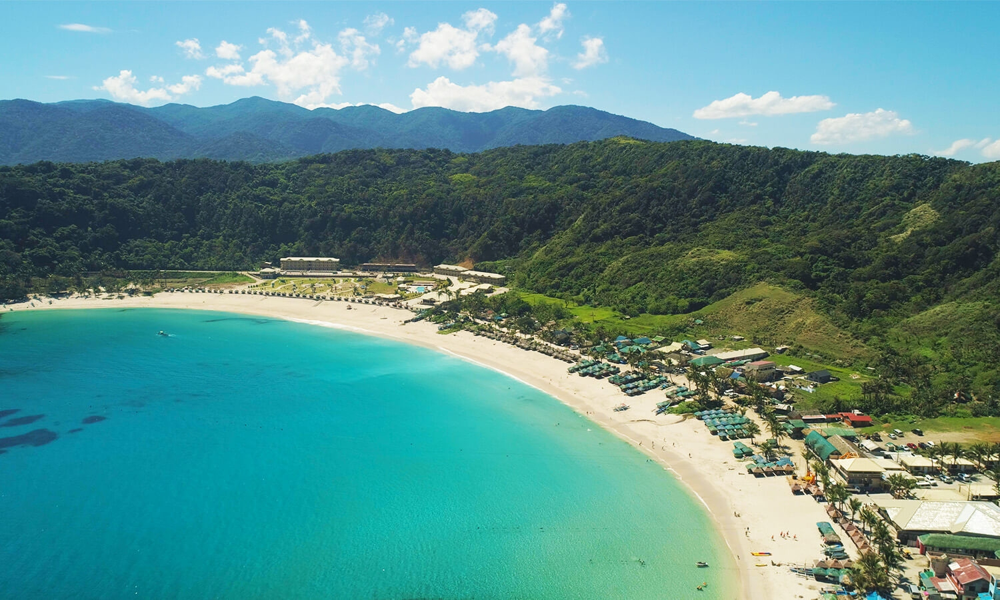

Bangui Windmills

Bangui Windmills- The first wind farm in Southeast Asia. The iconic row of giant wind turbines along the beach makes for amazing photos and a unique landscape.
Sand Dunes/h2>

Sand Dunes- A desert-like landscape perfect for adventure seekers. Visitors can enjoy 4x4 rides, sandboarding, and ATV adventures.

Pagudpud Beach- Known as the “Boracay of the North,” with white sand beaches and clear blue waters. Popular beaches include Saud Beach and Blue Lagoon.
Ilocos Norte offers unforgettable experiences for every traveler. Visit Ilocos Norte—where every journey becomes a story.